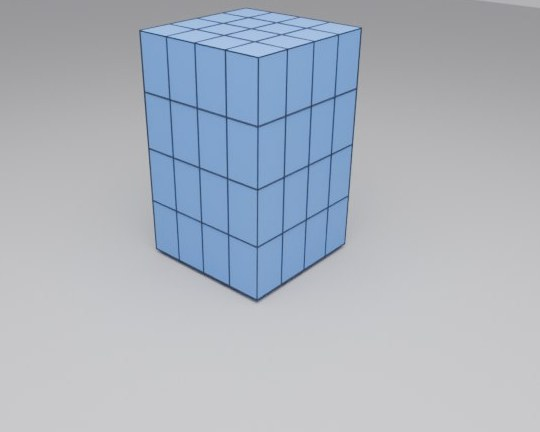
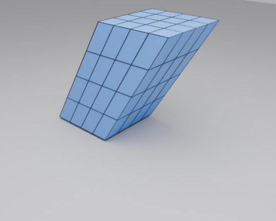

Bonus lesson
Shear
Shear slides the selected parts of a mesh sideways, like pushing the top of a stack of cards. In Object Mode or Edit Mode, find it under Transform › Shear, in the Toolbar, or press Shift+Ctrl+Alt+S.


How it works
The movement goes along the horizontal axis of your current view. The axis location comes from the Pivot Point. Everything above this axis moves in the same direction as your mouse pointer. Everything below it moves the opposite way.
The further a vertex is from the axis, the more it moves.
Settings
The tool settings are Offset (how far items are shifted from their original location), Axis and Axis Orthographic (the two axes of the imaginary shearing plane), Orientation, and Proportional Editing.
Axis and Axis Orthographic must not be the same axis. If they are, the shearing plane has no size and the objects disappear into a point.
Read the manual page on Shear.
Try it
This exercise is our own suggestion and has not been run step by step in the GUI. Add a cube, enter Edit Mode and select everything. Press Shift+Ctrl+Alt+S and move the mouse left or right, then click. Use Ctrl+Z to undo.